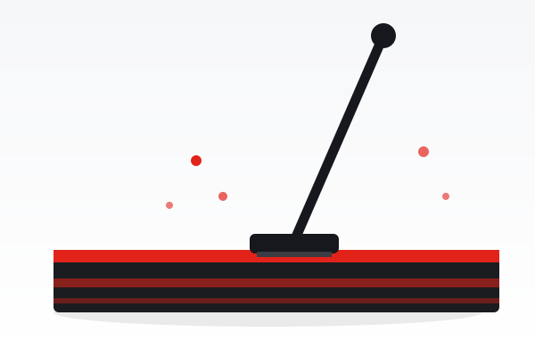
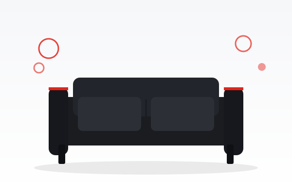
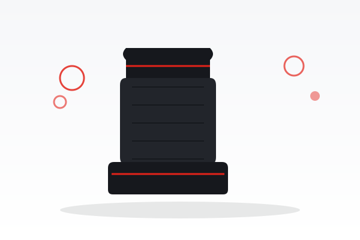
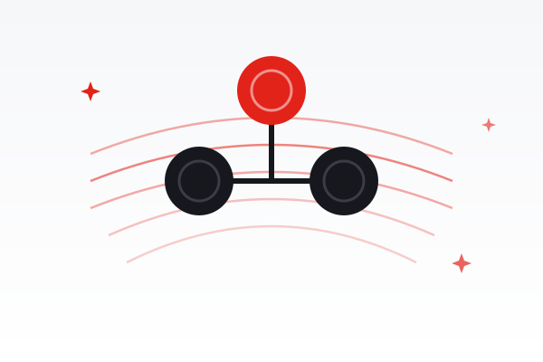
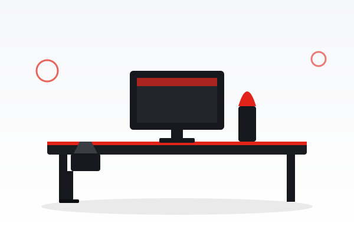
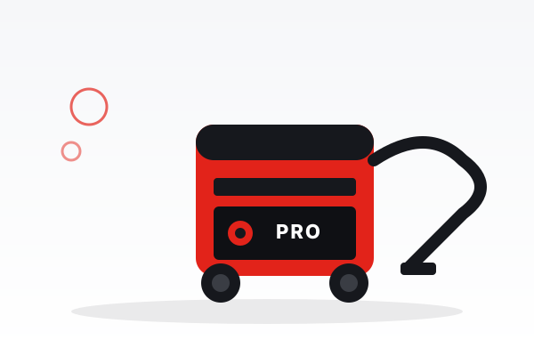

Pralnia dywanów
Głębokie pranie dywanów ze wszystkich włókien. Odbiór i dostawa pod adres w cenie.
Kurz, sierść i alergeny gromadzą się głęboko we włóknach. Pierzemy dywan na wskroś i suszymy w kontrolowanych warunkach.
Czytaj więcejPrzywracamy świeżość dywanom, tapicerce i meblom. Usuwamy plamy, kurz, roztocza i nieprzyjemne zapachy, z dojazdem do klienta i gwarancją jakości.
Od prania dywanów po sprzątanie biur i wypożyczalnię urządzeń Karcher. Wszystko, czego potrzebujesz, w jednym miejscu.
Głębokie pranie dywanów ze wszystkich włókien. Odbiór i dostawa pod adres w cenie.
Kurz, sierść i alergeny gromadzą się głęboko we włóknach. Pierzemy dywan na wskroś i suszymy w kontrolowanych warunkach.
Czytaj więcej
Pranie ekstrakcyjne wykładzin i dywanów u klienta, bez demontażu.
Wykładziny przyklejone do podłogi pierzemy ekstrakcyjnie na miejscu, bez demontażu i bez bałaganu.
Czytaj więcej
Pranie kanap, narożników, foteli i materacy, świeże i higienicznie czyste.
Kanapy, narożniki i materace pochłaniają kurz, pot i roztocza. Odświeżamy je głęboko, lecz delikatnie dla tkaniny.
Czytaj więcejRęczne czyszczenie i impregnacja skór naturalnych i ekoskóry.
Skóra z czasem matowieje i traci kolor. Czyścimy ją, odżywiamy i impregnujemy, by zachowała miękkość.
Czytaj więcej
Kompleksowe pranie wnętrza auta: fotele, podsufitka, dywaniki i bagażnik.
Pierzemy całe wnętrze auta i usuwamy zapachy, których nie wywietrzysz przez otwarte okno.
Czytaj więcej
Dezynfekcja ozonem: usuwamy zapachy, bakterie i wirusy.
Ozon usuwa źródło zapachów oraz bakterie i wirusy, w mieszkaniu, biurze i samochodzie.
Czytaj więcej
Mycie okien, witryn i przeszkleń bez smug, także na wysokości.
Myjemy okna, witryny i przeszklenia bez smug, także te trudno dostępne i na wysokości.
Czytaj więcej
Stałe i jednorazowe sprzątanie biur i lokali, czysto i terminowo.
Czyste biuro to wizytówka firmy. Sprzątamy dyskretnie i terminowo, także poza godzinami pracy.
Czytaj więcej
Wynajem profesjonalnych odkurzaczy piorących Kärcher na dobę lub weekend.
Wypożycz profesjonalny odkurzacz piorący Kärcher i wyczyść dywany czy tapicerkę samodzielnie.
Czytaj więcejDziałamy kompleksowo, z dojazdem do klienta lub w naszej pralni. Profesjonalne maszyny ekstrakcyjne i środki bezpieczne dla dzieci, alergików i zwierząt.
Dzwonisz lub wypełniasz formularz. Opisujesz, co wymaga czyszczenia.
Otrzymujesz bezpłatną, niezobowiązującą wycenę i termin realizacji.
Wykonujemy usługę u Ciebie lub w pralni, dbając o każdy detal.
Cieszysz się czystością. Dajemy gwarancję jakości naszej pracy.
Zobacz efekty naszej pracy. Dywany, tapicerka i wnętrza aut, które odzyskały świeżość.
Przeciągnij suwak, aby porównać stan przed i po naszej usłudze. Brud, plamy i zmęczony kolor znikają.
„Dywan wrócił jak nowy, a zapach po kocie zniknął całkowicie. Odbiór i dostawa pod drzwi, bardzo wygodnie."
„Wyprali narożnik i fotele u mnie w domu. Szybko, czysto i bez bałaganu. Efekt przerósł oczekiwania."
„Ozonowanie auta po poprzednim właścicielu zdziałało cuda. Polecam całą firmę, kontakt i terminowość na plus."
Tak. Pranie wykładzin, tapicerki meblowej, samochodowej oraz ozonowanie wykonujemy u klienta. Dywany odbieramy i dostarczamy pod wskazany adres.
Stosujemy profesjonalne, hipoalergiczne środki bezpieczne dla dzieci, alergików i zwierząt, dobrane do rodzaju włókna i zabrudzenia.
Zwykle od kilku do kilkunastu godzin, zależnie od materiału i wentylacji. Pranie ekstrakcyjne odciąga większość wilgoci, więc schnie szybciej.
Bezpłatną i niezobowiązującą wycenę przygotowujemy zwykle w ciągu 24 godzin od kontaktu telefonicznego lub przez formularz.
Napisz lub zadzwoń, a odpowiemy w ciągu 24 godzin i doradzimy najlepsze rozwiązanie dla Twoich potrzeb.